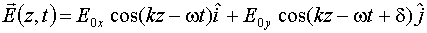
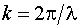
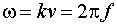

Consider a monochromatic plane wave of wavelength  traveling in the positive z-direction. If the field is completely polarized, then it is
either linearly polarized, circularly polarized, or elliptically polarized. In this module
the user can do two different type of activities.
traveling in the positive z-direction. If the field is completely polarized, then it is
either linearly polarized, circularly polarized, or elliptically polarized. In this module
the user can do two different type of activities.
First, the user can create any type of completely polarized light by selecting values for (a) the amplitude of the x-component, call it Eox , of the initial electric field vector, (b) the amplitude of the y-component, call it Eoy, of the initial electric field vector, (c) the phase difference between these two components, and (d) the wavelength of the light. The user can then see a set of electric field vectors at various points on the positive z-axis, and watch the wave travel across the computer screen.
Secondly, the user can insert a filter into the path of the propagating electric field, which was just created. Currently two types of filters are available: linear polarizers and retarders (wave plates).
2. Calculations
The electric field vector of any completely polarized monochromatic plane wave traveling in the positive z-direction can be written as
.
Here Eox is the amplitude of the x-component, Eoy is the amplitude of the y-component, d is the phase difference between the two components,  is the wave number, and  is its angular frequency.
In order to calculate the effect that a filter has on the electric field which is incident upon it, we used the Jones vector/Jones matrix approach. In this approach, the electric field vector incident upon the filter is represented by a two component column vector (its Jones vector). The filter is represented by a 2 x 2 matrix (its Jones matrix). The two component column vector which represents the electric field emerging from the other side of the filter (its Jones vector) is obtained by multiplying the Jones matrix for the filter by the Jones vector of the incident field.
For a polarizer filter the important parameter is the angle that the transmission axis of the polarizer makes with the positive x-axis (or positive y-axis). For a wave plate the important parameters are the number of waves of optical path length difference it provides (between the x- and y-components of the field) and the direction that the fast axis of the wave plate makes with respect to the positive x-axis (or positive y-axis).

Created by Srihari Angaluri
and Kiril Vidimce
Send comments to comments@webtop.org